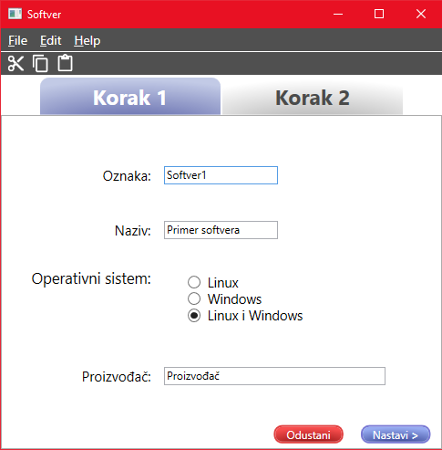
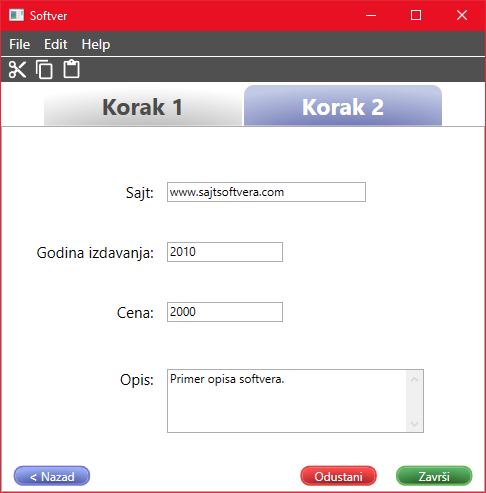

Dodavanje/izmena softvera
Da biste uneli novi softver potrebno je popuniti sva polja.
Za prelazak izmedju tabova se koriste dugmići Nastavi, za koje je prečica Ctrl+N i Nazad,
sa prečicom Ctrl+B.

Sadržaj polja za oznaku mora da bude jedinstven, odnosno dva softvera ne mogu imati istu oznaku.
Polje za naziv softvera treba da sadrži naziv softvera koji se unosi.
Operativni sistem predstavlja operativni sistem koji softver zahteva. Moguće je odabrati samo jedan operativni sistem.
Proizvođač predstavlja proizvođača softvera koji se unosi.

U polju za sajt se unosi sajt softvera.
Godina izdavanja predstavlja godinu izdavanja softvera. Broj koji se unosi za godinu mora biti pozitivan broj
veći od nula.
Cena označava cenu softvera. Broj koji se unosi za cenu mora biti pozitivan broj veći od nula.
U polju za opis se unosi opis softvera.
Da bi podaci ostali sačuvani kliknite Završi ili prečicu Ctrl+S.
Prilikom izmene već unesenog softvera, takođe je potrebno sačuvati.
Ukoliko želite da odustanete od dodavanja/izmene, potrebno je kliknuti na Odustani ili prečicom na tastaturi
Ctrl+Q.
Link do početnog prozora za pomoć: Početna stranica